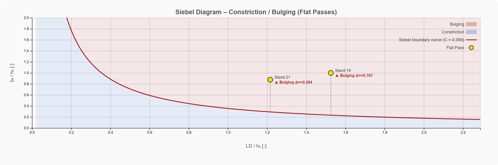

PyRoll GUI | Date: May 2026
During flat rolling, the free lateral edges of the workpiece deform in one of two characteristic ways depending on the process geometry:
The Siebel criterion provides a simple, geometry-based rule to predict which regime applies, using only the roll radius, the draft, and the entry dimensions of the workpiece.
The projected contact arc length \(l_D\) (Kontaktbogenlänge) is approximated as:
where \(R\) is the working roll radius and \(\Delta h = h_0 - s\) is the draft (entry height minus roll gap \(s\)).
The diagram is built from two dimensionless ratios, both normalised by the entry height \(h_0\):
Normalising by \(h_0\) (entry height) rather than mean height makes the criterion independent of the reduction level for a given entry geometry.
The boundary between the two deformation zones is a rectangular hyperbola in the \((l_D/h_0,\; b_0/h_0)\) plane:
The constant \(C\) is an empirically determined material/process factor. The default value used in PyRoll GUI is \(C = 0.355\) (adjustable in the diagram controls).
For each flat pass, the deviation from the boundary is calculated as:
| Value of \(\Delta\) | Position in diagram | Edge deformation mode |
|---|---|---|
| \(\Delta > 0\) | Above boundary curve | ▲ Bulging (Ausbauchung) — wide, flat strips |
| \(\Delta = 0\) | On the curve | Neutral — plane lateral edges |
| \(\Delta < 0\) | Below boundary curve | ▼ Constriction (Einschnürung) — narrow, thick strips |
The magnitude of \(|\Delta|\) indicates how far the operating point deviates from the neutral boundary — larger values indicate a more pronounced edge deformation.

In the PyRoll GUI, the Siebel diagram is displayed in the Results tab
for simulation sequences containing at least one flat pass
(TwoRollPass with FlatGroove).
| Symbol | Description | Unit |
|---|---|---|
| \(h_0\) | Entry height of the workpiece (in-profile height) | m |
| \(b_0\) | Entry width of the workpiece (in-profile width) | m |
| \(R\) | Working roll radius (or nominal radius if working radius not available) | m |
| \(s\) | Roll gap (gap between rolls) | m |
| \(\Delta h\) | Draft: \(h_0 - s\) | m |
| \(l_D\) | Projected contact arc length: \(\sqrt{R \cdot \Delta h}\) | m |
| \(l_D / h_0\) | Dimensionless contact length (x-axis) | – |
| \(b_0 / h_0\) | Dimensionless entry width (y-axis) | – |
| \(C\) | Siebel constant (default 0.355; adjustable) | – |
| \(\Delta\) | Deviation from boundary: \(b_0/h_0 - C\,/\,(l_D/h_0)\) | – |
FlatGroove). It is not valid for grooved
or shaped passes where the lateral constraint is provided by the groove geometry.